빠르게 흘러가는 음악은 강렬하죠
음악을 꼭 틀어주세요
빠르게 흘러가는 음악은 강렬하죠
하지만 멈춰서 흐르는 글씨를 보는 것도 재미를 만들어요. 완전히 멈출 수도 있죠.
강렬하고 재밌고 즐겁기도 해요 우리 인생도 그렇잖아요 대부분 빠르고 강렬하고 커다란 인생을 원하죠
멈춤은
빠르고 강렬한 인생은 우리를 자극시키고 더 큰 강렬함을 갈구하게 해요
늦음이 아닌
이 곡도 빠르지 않나요? 근데.. 당신이 악보 한줄을 완전히 멈춰보셨다면 색다른 소리를 들으셨을 거예요. 그럼 모두 멈추면 어떻게 될까요?
새로운 발견
음악이 멈췄을 때 당신은 어떤 소리를 들었나요?
음악이 멈추지 않았다면 들리지 않았을 그 소리처럼
때로는 멈출수록 더 많은 것을 보고
듣고 생각할 수 있어요
